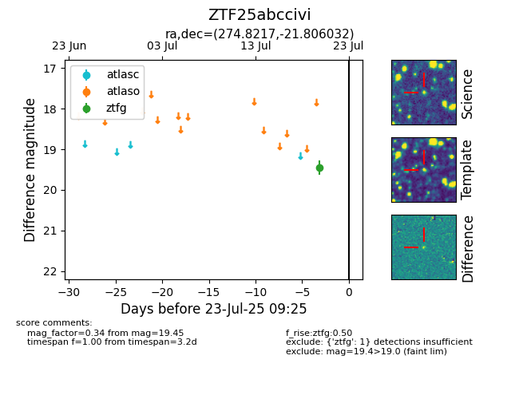

Target ZTF25abccivi at 2025-07-23 12:37, see:
FINK: fink-portal.org/ZTF25abccivi
Lasair: lasair-ztf.lsst.ac.uk/objects/ZTF25abccivi
ALeRCE: alerce.online/object/ZTF25abccivi
alt names
ZTF25abccivi (ztf,fink)
coordinates:
equatorial (ra, dec) = (274.8217,-21.80603)
galactic (l, b) = (9.9549,-3.08647)
photometry
last ztfg=19.45
1 ztfg detections
